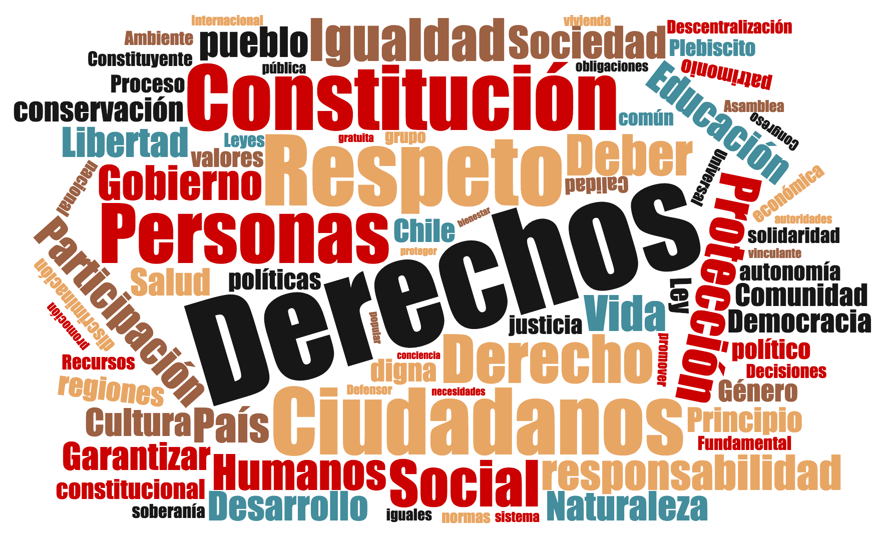

Los datos del Proceso Constituyente deben estar disponibles abiertamente para todas y todos los chilenos. Si crees lo mismo, sube públicamente tu Acta de Encuentro Local Autoconvocado.
Las siguientes son visualizaciones simples que enfatizan el valor de contar con datos públicos (disclaimer). Puedes ver las palabras más mencionadas en actas, mapas de encuentros por comunas, y otras estadísticas.
Palabras más mencionadas en las actas hechas públicas. El tamaño de cada palabra corresponde a la cantidad de veces que se menciona.
Mapa de encuentros locales por comuna.
En esta página iremos actualizando los datos de los Encuentros Locales a medida que estén disponibles. Idealmente podremos reportar datos y conclusiones mucho más interesantes si es que, como esperamos, el Proceso Constituyente hace disponible su información a la ciudadanía de manera abierta y libre.
Si deseas comunicarte con nosotros escríbenos a constitucionabierta@gmail.com, o por teléfono al +56987521761.
Disclaimer
Todos los datos son de Encuentros Locales registrados en http://unaconstitucionparachile.cl/datos y no necesariamente indican encuentros completados. Los datos son acumulados hasta lo disponible el día 24 de junio de 2016.
Los datos de palabras y conceptos mencionados son sólo de las actas que han hecho disponibles en nuestro sitio (ver actas), y considerando sólas actas desde las que se pueden obtener datos de manera automática (no escritas a mano).
Los datos demográficos son obtenidos de la proyección del INE para la población del 2011, usando como base el Censo del año 2002 (Descargar datos).